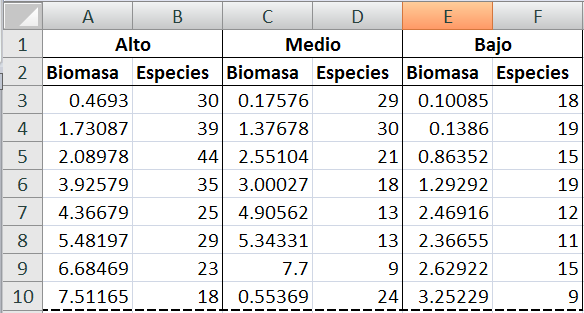
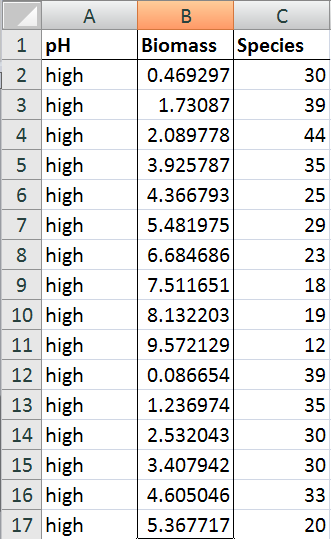

4. Data frames - manipulación
knitr::opts_chunk$set(echo = TRUE)Data Frames
Un objeto básico para guardar datos
¿Que es un data frame?
Construir un data frame
Ver el contenido de un data frame
Indexar un data frame (acceder a ciertos valores, filas, columnas)
¿Qué es un data frame?
- Es un objeto para guardar datos (parece una tabla)
- Se puede pensar como una colección de vectores de diferentes tipos (númerico, caracter, lógico)
- Los vectores suelen combinarse para que cada vector sea una columna del data frame
- Los vectores deben tener el mismo largo - ver función:
length()- para un vector, es el número de elementos - Una organización muy común es una variable por columna, una observación por fila
- Primera columna - identificador de casos; primera fila - nombre de la variable
¿Cómo se organiza un data frame?
Riqueza de plantas y biomasa en parcelas con tres diferentes pH de suelo (alto, medio, baja)

¿Cuántas variables hay? ¿Cómo se llaman? ¿Cuáles son los casos?
¿Cómo se organiza un data frame?

Tres variables:
* categórico (pH)
* conteo (no. especies)
* continuo (biomasa)
Construir un data frame desde vectores
Un ejemplo sencillo con tres vectores:
id <- 1:8
nom <- c("aa", "aa", "aa", "aa", "bb", "bb", "bb", "bb")
val <- c(2.0, 6.5, 3.2, 1.5, 0.5, 9.8, 7.4, 1.0)
df1 <- data.frame(ID = id, Nombre = nom, Valor = val)
df1Normalmente importamos datos directo a un data frame con una función como read.csv()
Nombres de las columnas, filas
Usar las funciones colnames(), rownames() tanto para asignar como devolver los nombres
colnames(df1)
rownames(df1)Asignar nombres
colnames(df1) <- c("Sitio", "Especie", "Densidad")
df1El resultado de colnames() es un vector. Lo podemos indexar con [] para acceder a valores específicos
colnames(df1)[1]Y asignar un nombre específico
colnames(df1)[1] <- "Parcela"
head(df1, 1)Ver el contenido y tipo de datos en un data frame
La función head() te deja ver las 6 primeras filas del dataframe
head(df1) Puedes controlar cuantas filas con el segundo argumento ?head
head(df1, 10)La función tail() hace lo mismo, desde abajo (tail = cola)
tail(df1)Que tipo de datos hay en el data frame
str(df1)Dos variables númericos (uno son números enteros - no decimales), y un factor con dos niveles
Factores
- Usamos factores para datos categóricos.
- Por ejemplo, tipo de hábitat, amenazas para biodiversidad, unidad taxonómico, sexo, distancia en bandas, etc.
- Clasifican a los datos (levels)
- Pueden ser ordenados o sin orden (ver
? factor) - Cuando importamos a un data frame, texto es convertido en factor
df1$Especie(R los trata como un vector de números enteros con un descriptor (label))
Acceder a datos en un data frame
Usar el símbolo $ con el nombre de la columna p.ej. df1$Especie
df1$Especie # tiene que ser el nombre de la columna exactoPara limitar lo que se muestra en la consola
head(df1$Especie)Usar un índice en corchetes []
Recuerda como indexar un vector
a <- letters[1:10]
b <- 50:100
a[1]
b[1:10]Acceder a un data frame con un índice []
Piensa en [fila, columna] (dos dimensiones)
df1[2,3] # devuelve el elemento de la segunda fila, en la tercera columna
df1[2:4,3] # devuelve los elementos desde la segunda hasta la cuarta fila, en la tercera columna
df1[2,] # devuelve TODOS los elementos de la segunda fila
df1[,3] # devuelve TODOS los elementos de la tercera columnaEs lo mismo que usar $Densidad
df1$DensidadOjo con las dimensiones… cuando usamos coma, y cuando no
df1[2:4,3] # devuelve los elementos desde la segunda hasta la cuarta fila, en la tercera columna
# Comparar con
df1$Densidad[2:4] # OJO Ya no usamos la coma, df1$Densidad es un vector (de una dimension)Usar múltiples valores en el índice:
df1[c(1,3,5),3] # devuelve los elementos 1, 3 y 5 de la tercera columnaUsar valores lógicos en el índice
Para un vector:
b <- c(1,2,3,4,5)
ind <- c(T, F, T, F, T) # podemos usar T o F para TRUE/FALSE
b[ind]Devuelve los valores que corresponden a la posición de TRUE
df1[df1$Densidad>2,3] # devuelve los elementos > 2 en la tercera columna
df1$Densidad
# ver el resultado de
df1$Densidad>2¿Que índice necesitamos para que dé este resultado?
# 9.8
df1[ ? , ? ]
df1Sexta fila, tercera columna
df1[6,3]¿Que índice necesitamos para que dé este resultado?
0.5 9.8 7.4
df1[ ? , ? ]
Elementos 5, 6 y 7 de la tercera columna
df1[5:7,3]¿Que índice necesitamos para que dé este resultado?
# Nombre Valor
# aa 1.5
# bb 0.5
# df1[ ? , ?]
Elementos 4 y 5 de la segunda y tercera columna
df1[4:5,2:3]Función subset()
Otra forma de obtener un subconjunto de datos de un data frame es con la función subset()
Estructura Tiene dos argumentos para hacer la selección:
subset(x, subset, select)
subset : expresión lógica (tiene que evaluarse a TRUE o FALSE)
select : selecciona cuales columnas se debe devolver
Queremos selecionar las columnas “Especie” y “Densidad”, que tienen el valor de densidad > 2.
subset(df1, subset = Densidad > 2, select = c(Especie, Densidad))Seleccionar todos los datos de la especie “aa”
sub.aa <- subset(df1, subset = Especie == "aa") # asignarlo a un objeto `sub.aa`Podemos omitir el argumento select si queremos un subconjunto de todas las columnas.
Fíjate bien como se escribe la expresión lógica para selecionar a la especie.
En subset no es necesario usar la notación df1$Especie en la expresión lógica